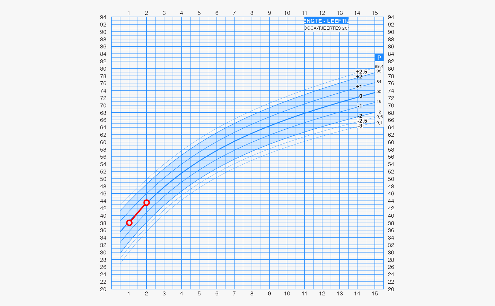

The function draw_chart() plots individual data on the growth chart.
draw_chart( txt = "", loc = "", format = "1.0", chartcode = "", selector = c("data", "derive", "chartcode"), chartgrp = NULL, agegrp = NULL, sex = NULL, etn = NULL, ga = NULL, side = "hgt", curve_interpolation = TRUE, quiet = FALSE, dnr = "0-2", lo = NULL, hi = NULL, nmatch = 0L, exact_sex = TRUE, exact_ga = FALSE, break_ties = FALSE, show_realized = FALSE, show_future = FALSE, draw_grob = TRUE, bds_data = "", ind_loc = "", ... )
| txt | A JSON string, URL or file with the data in JSON
format. The input data adhere to specification
BDS JGZ 3.2.5,
and are converted to JSON according to |
|---|---|
| loc | Alternative to |
| format | String. JSON data schema version number. There are currently
three schemas supported: |
| chartcode | Optional. The code of the requested growth chart. |
| selector | Either
If there is a valid |
| chartgrp | The chart group: |
| agegrp | Either |
| sex | Either |
| etn | Either |
| ga | Gestational age (in completed weeks) |
| side | Either |
| curve_interpolation | A logical indicating whether curve interpolation shoud be applied. |
| quiet | Logical indicating whether chart code should be
written to standard output. Default is |
| dnr | Donor data, Prediction horizon: |
| lo | Value of the left visit coded as string, e.g. |
| hi | Value of the right visit coded as string, e.g. |
| nmatch | Integer. Number of matches needed. When
|
| exact_sex | A logical indicating whether sex should be matched exactly |
| exact_ga | A logical indicating whether gestational age should be matched exactly |
| break_ties | A logical indicating whether ties should broken
randomly. The default ( |
| show_realized | A logical indicating whether the realized growth of the target child should be drawn |
| show_future | A logical indicating whether the predicted growth of the target child should be drawn |
| draw_grob | Logical. Should chart be plotted on current device?
Default is |
| bds_data | Legacy for |
| ind_loc | Legacy for |
| ... | Passed down to |
A gTree object.
Stef van Buuren 2020
fn <- system.file("testdata", "client3.json", package = "james") g <- draw_chart(txt = fn)  #> chartcode: PMAHN27